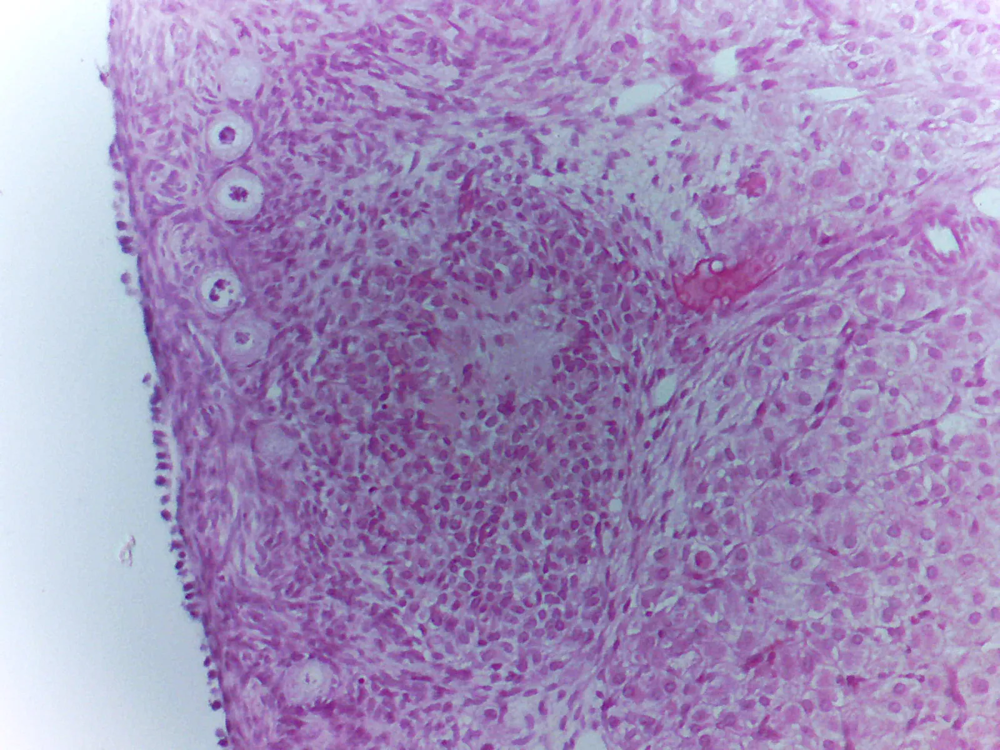
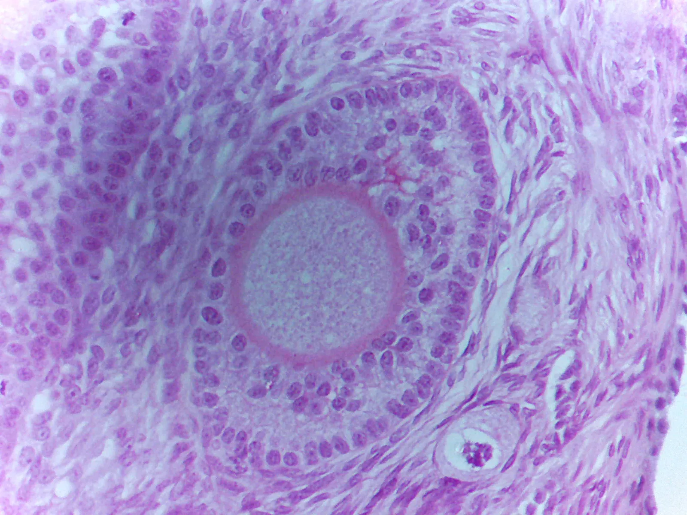
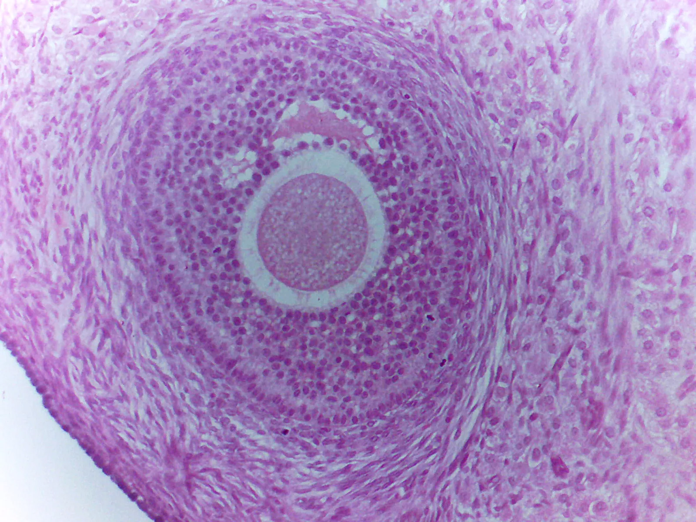

Lâmina 69 · Sistema reprodutor
Ovário



Toque na imagem para ampliar. No computador, use as setas do teclado para trocar de imagem.
Lâmina 69 · Sistema reprodutor



Toque na imagem para ampliar. No computador, use as setas do teclado para trocar de imagem.